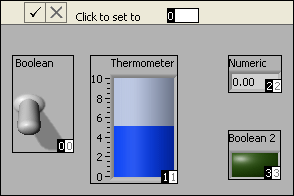

The tabbing order determines the order in which LabVIEW selects controls and indicators when the user presses the <Tab> key while a VI runs. The tabbing order also determines the order in which the controls and indicators appear in the records of datalog files you create when you log the front panel data. LabVIEW uses the order in which you add objects to the front panel or to the tab control as the default tabbing order.
Complete the following steps to change the tabbing order.
Select Edit»Set Tabbing Order to activate the tabbing order edit mode for the front panel.
Note To set the tabbing order of controls and indicators on a tab control page, right-click the page and select Reorder Controls In Page from the shortcut menu.
The front panel appearance changes in tabbing order edit mode, as shown in the following illustration. The white boxes on the controls and indicators show the current tabbing order. Black boxes show the new tabbing order. These numbers are identical before you make changes. In tabbing order edit mode, all hidden controls appear.

Enter a number in the Click to set to field on the toolbar. You cannot enter a number greater than the number of front panel or tab control controls and indicators.
Click an object with the tabbing order cursor to set the place number of the object as the number displayed in the Click to set to field on the toolbar. Notice that LabVIEW automatically renumbers the other front panel or tab control objects based on the original tabbing order.
Repeat steps 2 and 3 until all elements are in the order you want.
Note LabVIEW skips hidden controls when you tab through a front panel. You do not need to set the order of hidden controls.
When the black boxes display the tabbing order you want, click the Confirm button on the toolbar to accept the new tabbing order and exit tabbing order edit mode. Click the Cancel button on the toolbar to revert to the old tabbing order and exit the tabbing order edit mode.
Run the VI and press the <Tab> key to navigate the front panel or tab control controls or indicators. Use the left and right arrow keys to navigate the pages of the tab control.
Note If you add a splitter bar to the front panel and create panes, the tabbing order of front panel objects does not change. A control in any pane can be the next control in the tabbing order.